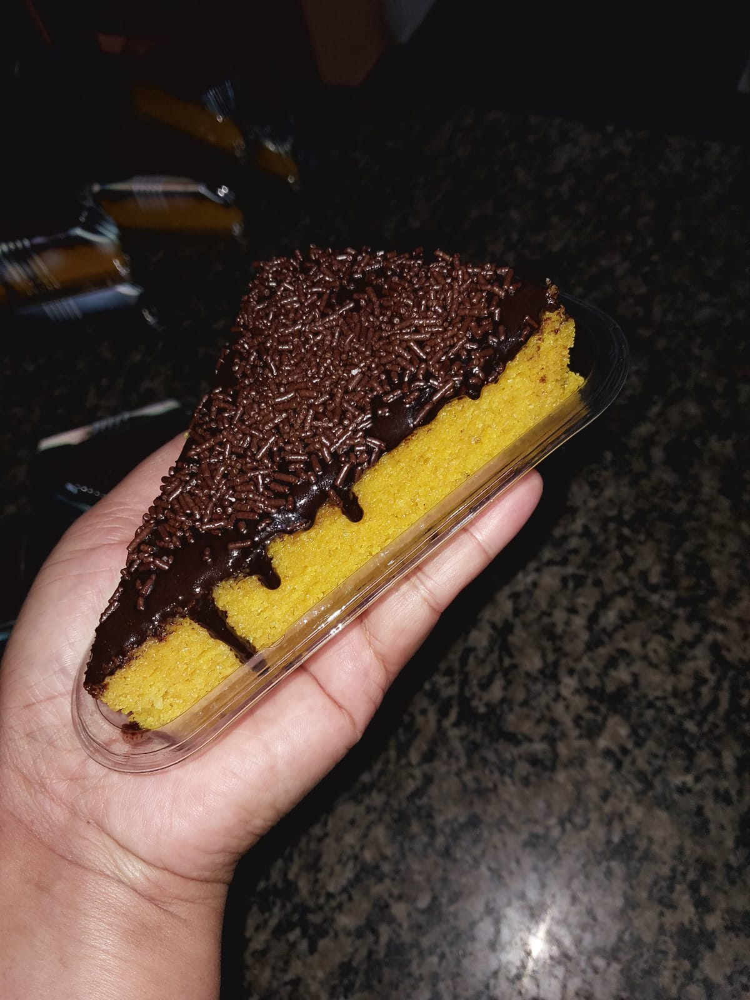

Bolo de Cenoura

Delicioso bolo de cenoura caseiro feito com ingredientes selecionados com amor e carinho.
Ingredientes:
- 3 cenouras médias;
- 3 ovos;
- 1 xícara de óleo;
- 2 xícaras de açúcar;
- 2 xícaras de farinha de trigo;
- 1 colher de sopa de fermento biológico;
Modo de preparo:
- Descasque as cenouras e corte-as em rodelas;
- No liquidificador, adicione os ovos, as cenouras, o óleo e o açúcar e bata até formar um líquido homogêneo;
- Unte uma forma média com manteiga e farinha de trigo;
- Em um recipiente, adicione a massa e a farinha de trigo, peneirando aos poucos;
- Adicione o fermento biológico e misture delicadamente;
- Pré-aqueça o forno a 180° graus durante 20 minutos;
- Coloque o bolo para assar por 40 minutos;
- Espere esfriar e desenforme.
Ingredientes da cobertura:
- 1 xícara de leite;
- 1 colher de manteiga;
- 3 colheres de cacau em pó;
Modo de preparo da cobertura:
- Adicione os ingredientes em uma panela e misture até ficar homogêneo;
- Mexa em fogo baixo até engrossar;
- Espere esfriar e adicione por cima do bolo;
- Finalização de sua preferência.